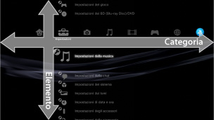
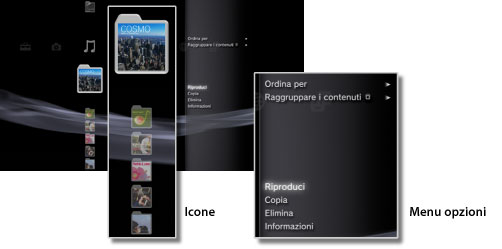
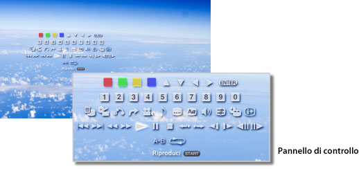

Informazioni sul menu XMB™ > Informazioni sul menu XMB™ (XrossMediaBar)
Informazioni sul menu XMB™ (XrossMediaBar)
Utilizzo del menu XMB™
Il sistema PS3™ include l'interfaccia utente XMB™ (XrossMediaBar). Nella riga orizzontale vengono mostrate le funzioni del sistema in categorie, mentre nella colonna verticale vengono mostrati gli elementi che possono essere eseguiti in ogni categoria.

| Tasti direzionali | Selezionano una categoria o voce. |
|---|---|
Tasto  |
Conferma la voce selezionata. |
Tasto  |
Annulla un'operazione. |
Tasto  |
Visualizza il menu opzioni/pannello di controllo. |
| Tasto PS | Visualizza il menu XMB™. |
Riproduzione di contenuto
Nel menu XMB™ selezionare il contenuto sul disco o supporto di memorizzazione, quindi premere il tasto . Per fermare la riproduzione, premere il tasto .
Nota
Con alcuni modelli del sistema PS3™, per utilizzare i supporti di memorizzazione è necessario disporre di un adattatore USB appropriato (non in dotazione).
Pannello informazioni
Tramite il pannello informazioni visualizzato nella parte in alto a destra dello schermo, è possibile visualizzare informazioni quali il numero degli amici che sono online, le notifiche di nuovi messaggi e le informazioni aggiornate disponibili in [Novità].

(1) |
Avatar * |
|---|---|
(2) |
Numero di amici online * |
(3) |
Informazioni su nuove chat di testo * |
(4) |
Informazioni su nuovi messaggi |
(5) |
Data e ora |
(6) |
Icona Occupato |
(7) |
Informazioni disponibili in [Novità]* |
* Visualizzato solo se si è effettuato l'accesso a PSNSM.
Utilizzo del menu opzioni
Selezionare un'icona nel menu XMB™ e premere il tasto per visualizzare il menu opzioni. Il menu opzioni può essere visualizzato o nascosto premendo il tasto .

Voci del menu opzioni
Le voci del menu opzioni variano in base alla categoria.
| Riproduci/Avvia/Visualizza | Riproducono il contenuto. |
|---|---|
| Rimuovi disco | Consente di espellere il disco. |
| Elimina | Elimina il contenuto. |
| Copia | Copia il contenuto nella memoria di sistema o sul supporto di memorizzazione.*1 |
| Informazioni | Visualizza le informazioni sul contenuto. Alcune informazioni come il nome possono essere modificate. |
| Aggiungi a elenco di riproduzione | Aggiunge il contenuto ad un elenco di riproduzione. |
| Visualizza tutto | Visualizza tutte le cartelle salvate sul supporto di memorizzazione o su un dispositivo di archiviazione USB.*1 |
| Ordina per | Ordina le voci del contenuto per nome, data, ecc. |
| Raggruppare i contenuti | Modifica il metodo di raggruppamento per album, formato o altre opzioni.*2 |
| Elimina molteplici | Seleziona più voci del contenuto e le elimina contemporaneamente. |
| Copia molteplici | Seleziona più voci del contenuto e le copia contemporaneamente. |
| *1 |
Con alcuni modelli del sistema PS3™, per utilizzare i supporti di memorizzazione è necessario disporre di un adattatore USB appropriato (non in dotazione). |
|---|---|
| *2 |
Il contenuto che non possiede le informazioni necessarie per il raggruppamento verrà salvato nella cartella [Sconosciuto]. Alcuni contenuti potrebbero non essere raggruppati. |
Utilizzo del pannello di controllo
Durante la riproduzione dei contenuti, premere il tasto per visualizzare il pannello di controllo. Il pannello di controllo può essere visualizzato o nascosto premendo il tasto . Le voci del pannello di controllo variano in base al contenuto riprodotto.

Utilizzo contemporaneo di funzioni multiple
Gli utenti possono utilizzare contemporaneamente più funzioni. Ad esempio, è possibile visualizzare immagini sotto  (Foto) o accedere a Internet sotto
(Foto) o accedere a Internet sotto  (Rete) durante la riproduzione di musica sotto
(Rete) durante la riproduzione di musica sotto  (Musica).
(Musica).
Esempio: visualizzazione di immagini sotto (Foto) durante la riproduzione di musica sotto (Musica)
1. |
Riprodurre musica in |
|---|---|
2. |
Premere il tasto PS. |
3. |
Selezionare le immagini da visualizzare sotto |
Note
- Non è possibile riprodurre contenuto sotto (Musica) con altre funzioni durante la riproduzione di Super Audio CD o quando
 (Impostazioni) >
(Impostazioni) >  (Impostazioni della musica) > [Frequenza di uscita] è impostato su [44,1/88,2/176,4 kHz].
(Impostazioni della musica) > [Frequenza di uscita] è impostato su [44,1/88,2/176,4 kHz]. - In base al tipo di contenuto riprodotto, è possibile che alcune funzioni solitamente utilizzabili in contemporanea non siano disponibili.
Avviso
Su alcuni sistemi PS3™ non è consentita la riproduzione di Super Audio CD. Per ulteriori informazioni, consultare [Tipi di dischi riproducibili].